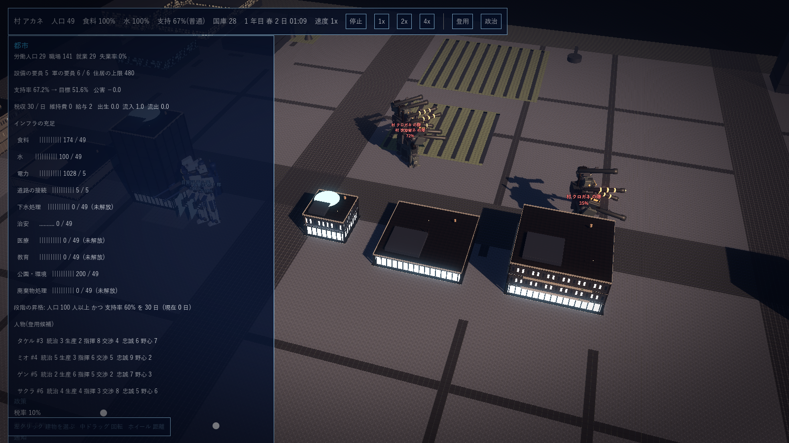

G20 手順5 外交: 設計案と決定事項
2026-10-15 作成。作る順番の 5 の後半。正典(G1「同じ地図上の AI 国家(勢力)が複数」「戦争か外交かはプレイヤーが選ぶ」、G2 第 5 節、G3「同盟・通商・不可侵・戦争」「終わり方: 大陸の制覇か同盟網による支配」、G4 政治・外交の列、G7 の右半分、G12 #14 輸出入無制限、G16「AI 国家も同じ仕組み」、G17 #19 の外交への波及、G19 の亡命者)に沿う。2026-10-15 の回答で #1〜#12 を確定(#1: AI 勢力の工場は概算でよく、プレイヤーが侵攻して拠点を落としたときに相応のスクラップが得られること。#3: 数値は適宜調整)。
1. 位置づけ
工場・機体・軍・都市・政治がつながった今、残る矢印は 政治 ↔ 外交 と 軍 ↔ 外交(威圧・防衛 / 和平)の 2 本(G18)。外交は AI 勢力との関係値と条約を持ち、プレイヤーの行動と AI の意思決定で動く。戦争になると G16 の隊がそのまま戦い、拠点の陥落で征服と制覇が決まる。これでゲームの終わり方(制覇か同盟網、敗北は征服か失脚)が全て計算の上に乗る。
2. 着手前の決定事項(2026-10-15 確定)
| # | 項目 | 決定 | 根拠・備考 |
|---|---|---|---|
| 1 | AI 勢力の表現 | 同じ地図上に拠点(格納庫の建物)を持つ勢力。第 1 段階では工場を実際には回さず、台帳(人口・支持率・兵力・国庫・技術レベル・性格)を月ごとに集計で成長させる(性格と段階で率が決まる)。隊は G16 の隊そのもの(系統・世代・品質)で、戦場では同じ式で戦う。勢力は 2〜3(村 ミナト = 通商型、村 クロガネ = 好戦型、山賊団 = 略奪型。G7 のモック)。工場の概算として勢力は「蓄えたスクラップ」(人口 × 技術レベル × 係数で月ごとに増える)を持ち、拠点を落とした側がそれを得る(2026-10-15 回答) | G1「同じ地図上の AI 国家」、G16「AI 国家も同じ仕組み」、G12 #17 と同じ集計近似の考え方 |
| 2 | 関係値と状態 | 勢力ごとに関係値 −100〜+100。行動と出来事で増減し、毎月 0 へ 2 ずつ戻る。状態は関係値から: 敵対(−40 未満)/ 警戒(−40〜−10)/ 中立 / 友好(+30 以上)。条約(通商・不可侵・同盟)と戦争は状態とは別のフラグ | G7「関係 +35 友好 通商」「−60 敵対 交戦中」 |
| 3 | 条約の効果 | 通商: 交易所の輸出入の価格 +10%(売値 ↑・買値 ↓)、関係 +1 / 月、勢力の国庫も増える。不可侵: 互いに宣戦できない(破棄は関係 −50、他の全勢力の関係 −20)。同盟: 戦争時に同盟国が隊を 1 つ派遣(拠点の前に現れ、攻撃命令に従う)、相手から宣戦されると同盟国も参戦、同盟網による勝利の対象 | G3 の 4 種 |
| 4 | プレイヤーの行動 | 通商を提案 / 不可侵を提案 / 同盟を提案 / 贈り物(国庫から、関係 +10 ずつ、月 1 回)/ 威圧(兵力比 ≥ 1.5 なら相手が要求を飲む(貢納か通商)、未満なら関係 −20)/ 宣戦(不可侵中は不可)/ 和平の提案(戦争中、戦況で成功率)。提案の成功率 = 関係値から(中立 30%、友好 60%)+ 交渉役の能力 × 3% + 兵力比の補正 ± 10% + 条約ごとの難度(通商 +20%、不可侵 0、同盟 −20%)。失敗すると関係 −5、同じ提案は 30 日できない | G7 のボタン、G19 #2 交渉役の効果(外交の成功率) |
| 5 | AI の意思決定 | 1 日ごとに判定、月ごとに大きな決定。性格(通商型 / 好戦型 / 略奪型 / 孤立型)で基礎の確率を持つ。侵攻: 好戦型は兵力比(自 / 相手)が 1.3 以上で宣戦、略奪型は 1.0 以上で拠点を狙わず隊を送って工場の建物を襲う(撃破すると戦利品)。要求(不利な条件の提示): 兵力比が有利なとき 貢納(月額)か 通商の打ち切り を突きつけ、拒むと関係 −30。提案: 通商型は通商と不可侵を、好戦型は同盟を(共通の敵がいるとき)。支持率の波及(G17 #19): プレイヤーの支持率が 50 未満だと侵攻と要求の確率が (50 − 支持率) / 50 倍だけ増える。亡命者(G19): 離反先の勢力の関係 −10、その勢力の兵力 +亡命者数の 1% | G17 #19、G19 #6 の亡命者 |
| 6 | 戦争の進み方 | 宣戦で戦争状態。AI は拠点から隊を出撃させ、相手の拠点(格納庫)へ攻撃命令を出す(G16 の計算そのまま)。建物は耐久を持ち(床面積 × 階数 × 係数)、隊の射撃を受けると減る。拠点の耐久 0 で陥落: プレイヤーの拠点が落ちると征服(敗北)、AI の拠点が落ちると属国(その勢力は制覇に数える。隊は消え、関係は +50 固定)。落とした側の隊の帰還先の建物に、その勢力の蓄えたスクラップ(鉄板・歯車・鋼・回路など技術レベルに応じた品)が入る。和平は戦争中の損耗(撃破した機体数の比)で成功率が決まり、優勢な側が要求(貢納)を付けられる。防御壁と砲塔(G16 次段階)は建物の耐久に直接つながる | G16 の隊・命中・撃破、G1 確定「建物の防御」 |
| 7 | 兵力比 | 戦力 = Σ(隊の生存機 × (1 + 0.1 × 世代) × 品質 / 70)。兵力比 = 相手の戦力 / 自分の戦力(G7 の表示)。AI 勢力の戦力は台帳の隊から同じ式で | G7「兵力比 0.8 / 1.4 / 0.6」 |
| 8 | 勝利と敗北 | 制覇: 全ての AI 勢力が属国になったとき。同盟網: 生存する全ての勢力と同盟を結んだとき(属国は数に入れない)。敗北: 拠点の陥落(征服)か失脚(G17 #19)。どれかに達したら通知を出し、計算は止めない(続けて遊べる) | G3「終わり方」 |
| 9 | 時間の刻み | 外交は 1 日ごと(関係の変化・AI の判定・要求の期限)、勢力の成長と関係の自然回復は 1 か月ごと。戦争中の隊の動きは毎ティック(G16) | G3「外交は 1 日ごと」 |
| 10 | AI 勢力の成長 | 月ごとに 人口 × (1 + 成長率)、兵力は人口と技術レベルから(隊の数 = 人口 / 100 を上限に、世代 = 技術レベル)。技術レベルは年ごとに 1 上がる(国家まで)。性格ごとに成長率と軍の比率が違う(通商型は国庫、好戦型は兵力)。数値は json | G4 の段階を AI にも当てはめる |
| 11 | 見える情報 | G7 の表: 勢力・関係・状態・兵力比。詳細(人口・技術・性格の推定)は交渉役の能力 5 以上で見える。AI の意図(侵攻の準備)は兵力比が 1.3 を超えたとき「警告」として通知 | 交渉役が空席だと補正なし(G7 のモックの注記) |
| 12 | 第 1 段階の範囲 | 計算(GPS.Sim): 勢力の台帳と成長、関係値と状態、条約 3 種、行動 7 種、AI の意思決定(侵攻・要求・提案・和平)、戦争(AI の隊の出撃と攻撃、建物の耐久と拠点の陥落、属国)、兵力比、勝利と敗北の判定、通商の価格補正。命令: Propose / Gift / Threaten / DeclareWar / ProposePeace / AnswerDemand / BreakTreaty。検証は xunit と、政治画面の右半分(G7。勢力の表・行動のボタン・要求への回答・通知)、都市の画面で AI 勢力の拠点と侵攻してきた隊を描く。含めない: 戦艦、複数都市と割譲、AI 国家の工場の実計算、スパイと諜報、同盟国への隊の派遣の操作(自動のみ) |
3. 第 1 段階の実装記録(2026-10-15 完了)
#1〜#12 を sim/GPS.Sim/Diplomacy.cs に実装し、xunit 66 件(既存 58 + 外交 8)が全て通る。数値は game/data/diplomacy.json で調整する。
| 区分 | 内容 | ファイル |
|---|---|---|
| 勢力の台帳 | Power: 人口・支持率・技術・国庫・蓄えたスクラップ・関係値・戦争・条約・属国・拠点の建物・残りの戦力・冷却・申し出・貢納。月ごとに性格の成長率で人口が増え、戦力は人口 × 0.05 × 軍の比率まで回復、スクラップは人口 × 技術 × 0.2 ずつ増える。年ごとに技術 +1(L4 まで)。勢力の隊の陣営 = 100 + Id | Diplomacy.cs(Power、Month)、diplomacy.json(powers、personalities) |
| 関係と状態 | −100〜+100。宣戦 −60、贈り物 +10、条約 +10、不可侵の破棄 −50(他の勢力 −20)、威圧の失敗 −20、提案の失敗 −5、要求の拒否 −30、属国 +50 固定、亡命 −10、貢納 +2 / 月。毎月 0 へ 2 ずつ戻る。状態は 敵対(−40 未満)/ 警戒(−10 未満)/ 中立 / 友好(+30 以上)/ 属国 | Power.State、Relate |
| 条約 | 通商: 売値 +10%・買値 −10%(Factory.TradeBonusPct)、関係 +1 / 月。不可侵: 互いに宣戦不可(破棄で関係 −50)。同盟: 相手から宣戦されると同盟国が援軍 1 隊(3 機、陣営 = プレイヤー)を拠点の前に出し、同盟網の勝利に数える | Propose、BreakTreaty、DeclareWar |
| 行動 | 提案(成功率 = 状態 5 / 15 / 30 / 60% + 交渉役 × 3% ± 兵力比 10% + 難度 通商 +20 / 不可侵 0 / 同盟 −20、失敗で −5、30 日の冷却)、贈り物(人口 × 2、+10、月 1 回)、威圧(兵力比 ≤ 0.67 で相手が 12 か月の貢納、失敗で −20)、宣戦、和平(損耗比で 80 / 40 / 15%、優勢なら相手から貢納)、申し出への回答(受ける / 断る)、条約の破棄 | Propose、Gift、Threaten、DeclareWar、ProposePeace、AnswerOffer、BreakTreaty |
| AI の意思決定(1 日ごと) | 性格ごとの確率で 侵攻(好戦型: 兵力比 ≥ 1.3)、襲撃(略奪型: 最寄りの工場の建物を狙い、落とすと在庫を略奪して帰る)、要求(貢納 / 通商の打ち切り。7 日で回答、期限切れは拒否扱い、好戦型は拒否で 50% 宣戦)、提案(月ごと、通商型は通商と不可侵)。支持率 50 未満だと侵攻・襲撃・要求の確率が (50 − 支持率) / 50 倍だけ増える(G17 #19)。戦争が 90 日続くか損耗 7 割で和平を申し出る。兵力比 1.3 超の好戦型は月ごとに「警告」 | DiplomacySim.Day |
| 戦争 | AI は拠点から隊を出し(台帳の戦力を消費、最大 6 機、系統は性格で)、プレイヤーの拠点(City.Capital)を攻撃する。建物は耐久(床面積 × 階数 × 400)を持ち、機体の目標が無い隊は建物を撃つ(建物は避けないので精度どおり)。実弾の弾薬が尽きた隊は帰還して補給し、1 時間ごとに再出撃する。拠点の耐久 0 で陥落: プレイヤーなら征服(Outcome = conquered、計算は続く)、AI なら属国(隊は消え、関係 +50、落とした隊の帰還先の建物にスクラップ(技術レベルに応じた品)が入る)。撃破数は損耗比として記録 | Combat.cs(TargetBuilding、hit_building、no_ammo)、BuildingFell、SpawnSquad |
| 兵力比 | 戦力 = Σ 生存機 × (1 + 0.1 × 世代) × 品質 / 70。AI は台帳の残りの戦力 × (1 + 0.1 × 技術) も足す。兵力比 = 相手 / 自分 | PlayerStrength、PowerStrength、Ratio |
| 勝利と敗北 | 制覇 = 全勢力が属国、同盟網 = 生存する全勢力と同盟、征服 = 拠点の陥落、失脚 = G17 #19。通知(victory / conquered / defeat)を出し、計算は止めない | Victory |
| 命令 | Propose / Gift / Threaten / DeclareWar / ProposePeace / AnswerOffer / BreakTreaty / SetCapital / AddPower。OrderSquad に TargetBuilding を追加(建物の攻略)。全て保存と再生の対象 | Diplomacy.cs、Combat.cs、Simulation.cs |
4. 画面(Godot)
政治画面(G19)の右の列の下に外交を置いた: 勢力の表(関係・状態・条約・兵力比・申し出の数)、選んだ勢力の詳細(性格・人口・技術・戦力・蓄え。交渉役の能力 5 以上で)、申し出への回答、行動のボタン(提案 3 種は成功率付き、贈り物、威圧、宣戦。戦争中は和平の成功率と、待機中の隊の出撃 → 相手の拠点)、交渉役の補正、決着。都市の画面では AI 勢力の拠点に名札、出撃中の隊(自軍は水色・敵は赤の名札と耐久)と射線・閃光を描く。建物の板に耐久と陥落を表示。起動の引数 --war powerId --defend で撮影できる。

政治画面の外交: 村 ミナト(通商型、中立)に通商 60% / 不可侵 40% / 同盟 20% の提案、贈り物 120、威圧、宣戦。交渉役が空席なので補正なし。

村 クロガネ に宣戦した翌日。クロガネの重装隊(赤の名札、耐久 72% / 35%)が拠点の格納庫へ向かって街区に入り、自警団の第 1 隊(左奥)が迎え撃っている。
5. 残る粗(第 1 段階の外)
| 項目 | 状態 |
|---|---|
| AI の工場の実計算・諜報 | AI の工場は蓄えたスクラップで概算(2026-10-15 回答「概算でいい」)。諜報は正典に無いので入れない。複数都市と割譲は G17 第 8 節(2026-10-16)、戦艦は G16 第 9 節、勢力の戦艦と砲撃戦は第 11 節 |
| 防御壁と砲塔(G16 次段階) | 実装済み(G16 第 8 節、2026-10-16) |
| 陥落した建物の修復 | 陥落した建物は動かないまま。修復の命令と費用は修理の工場連携と合わせて |
| 同盟国への援軍の操作 | 自動のみ(陣営はプレイヤーなので命令はできる) |
| AI 勢力どうしの外交 | 勢力どうしの関係は持たない(プレイヤーとの関係だけ) |